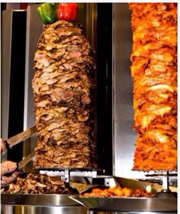
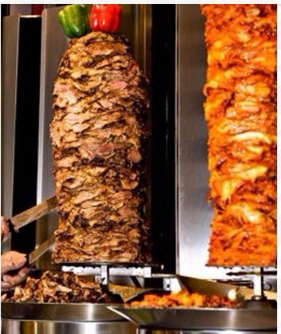

Conozcamos su origen
El Shawarma es una típica comida de Oriente Medio en especial Siria, Turquía, Líbano, Egipto e Israel. Este producto en sus inicios sirvió de comida para los reyes. Se dice que este se comenzó a cocinar en una barra metálica debido a un conflicto bélico. Se utilizaba espadas para cocinar la carne y el pan sustituía los platos y cubiertos. Este plato se compone por carne asada, verduras y salsa, todo ello dentro de un pan árabe. En cuanto a la carne, tradicionalmente era cordero, pero hoy en día podemos encontrar Shawarma de pollo o de ternera también. Habitualmente conocemos dos formas de servir los kebab. La primera de ellas, es en el pan de pita, al que se le hace un corte y en su interior introducimos la carne, las verduras y la salsa, físicamente parecido al sándwich. Otra manera es lo que aquí conocemos como durum kebab, y consiste en utilizar un pan árabe, introducir los ingredientes y enrollarlo, quedando en forma de rulo.